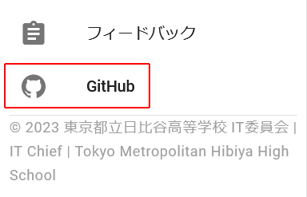
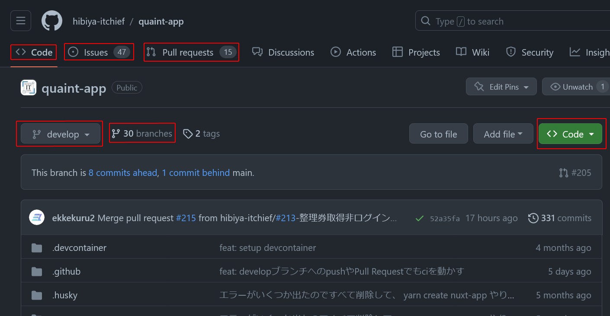
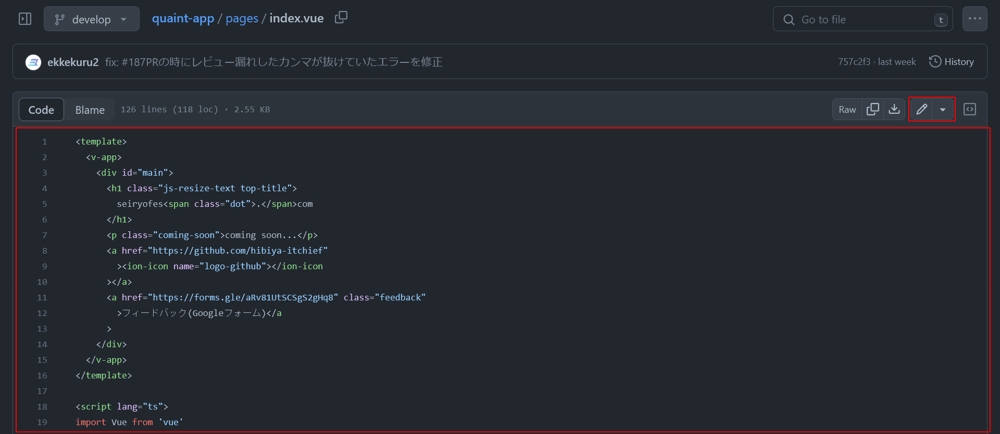
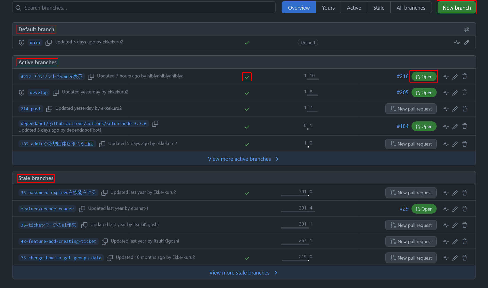
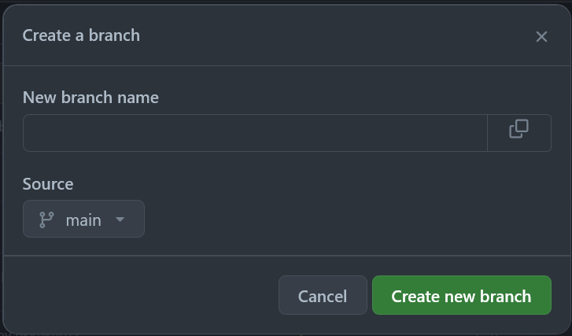
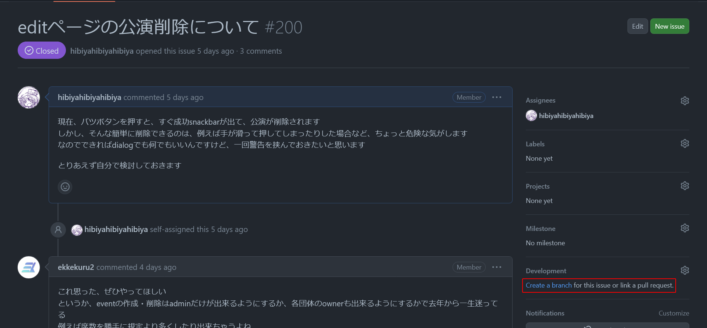
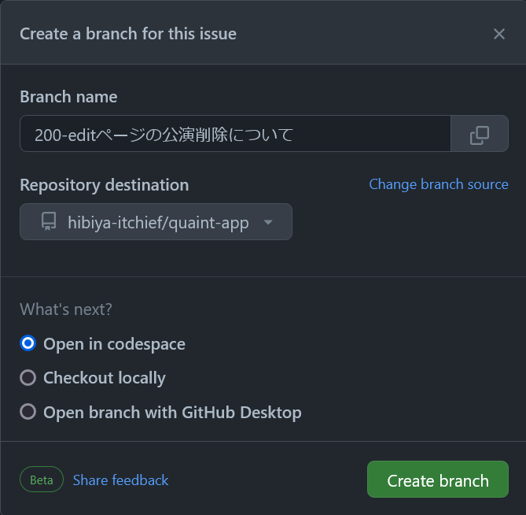
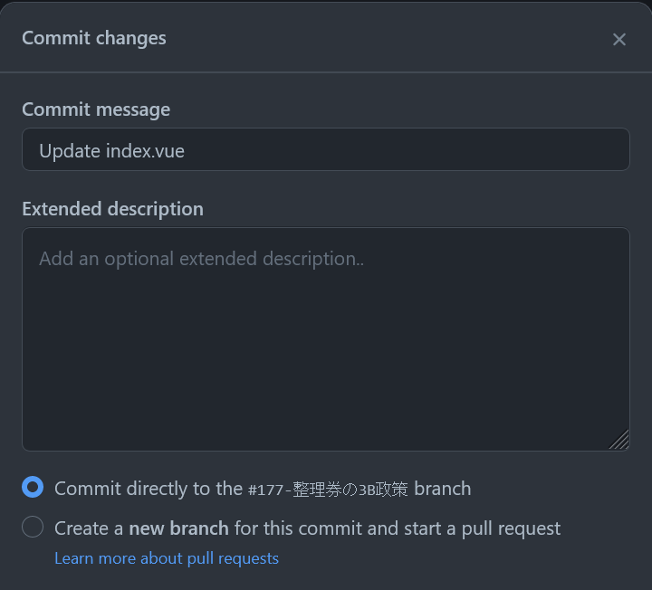
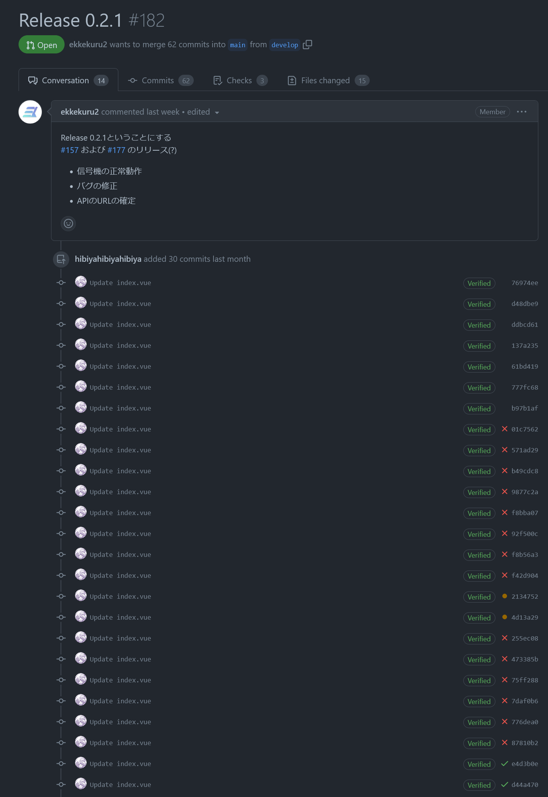

GitHubの使い方(暫定)
GitHubとは
「GitHub（ギットハブ）」とはプログラムのソースコードを、オンラインで共有・管理するサービスです。
GitHubとは？より
たくさんの機能を持っているので最初は使いづらいと思いますが、じきに慣れます。
まずはこちら：GitHubとは？
また、Gitについては【工事中】
現在動いている星陵祭のサイト seiryofes.com や、現在表示されているこのページも、 GitHub上にソースコードがあります。
このページでは、そんなGitHubの具体的な使い方について記します。
ただ、画像を要所要所で用意していますが、すべての画面・機能を網羅してはいないので、実際に扱うことで使い方を習得してください。
(以下、IT委員会のGitHubに入っていることを前提とします。)

(seiryofes.comの左上のメニューから開けます)
レポジトリ / Repository
「一番大きい分け方のフォルダ」というイメージでよいと思います。
この中にたくさんのファイルやフォルダが入っています。
レポジトリ名の横に Public と書かれている場合、外部の人が中身を見ることができます。
各レポジトリについては以下の通りです。
quaint-app
フロントエンドです。
quaint-api
バックエンドAPIです。
quaint-docs
星陵祭オンライン整理券Wikiです。
general
唯一privateレポジトリ(非公開のレポジトリ)で、IT委員会内部についての情報などを入れる予定となっています。
ここでは例として quaint-app レポジトリのdevelopブランチを使って説明します。

左上のCode
ソースコードの一覧が表示されます。
Issues
Issuesでは、このレポジトリ内のissue一覧が表示されます。
詳しくは：Issue
Pull requests
Pull requestsでは、レポジトリ内のプルリクエスト一覧が表示されます。
詳しくは：Pull request
developと書かれたボタン
現在開いているbranchを示しています。
押すことで違うbranchを開くことができます。
branches
現在このレポジトリにあるbranchの数が示されています。
押すとbranch一覧のページに飛びます。
詳しくは：ブランチ・コミット / Branch & Commit
緑色のCodeボタン
Codespaceを作るためのボタンです。
詳しくは：Codespace
また、画面外下方には README.md のプレビューが表示されています。
README.mdには、基本的にCodespaceを開いた際にすることが記されています。
次に、pages/index.vueを例にして、GitHub備え付けのファイル編集画面を説明します。

このように、ソースコードには色が付けられています。
この画像は閲覧モードとなっています。
右の鉛筆マークを押すと編集(Edit)モードになれます。
内容を編集して、commitをします(Ctrl + Sでも可)。
詳しくは：Commit
ただし、この画面で編集することはまれです。
ブランチ・コミット / Branch & Commit
ブランチ【branch】
枝。枝分かれしたもの。
GitHubでは、本流を直接変更するとリスクが大きいため、
内容の全く同じbranch(枝)を作り、そこで編集・動作確認をして、
本流に変更箇所を結合させるという仕組みとなっています。
issueを解決するために作ることが多いです。
 branch一覧のページです。(リンク)
quaint-appレポジトリの場合、デフォルトのbranchはdevelopとなっていますが、
それに加えmainブランチも重要なブランチとなっています。
この2つは直接編集ができないようになっています。
mainブランチはseiryofes.comの中身にあたります。
詳しくは【工事中】
developは開発における本流です。
ほとんどのbranchはdevelopから分流され、developにマージされます。
developをmainにマージすることで、seiryofes.comの内容が更新され、最新版になるということです。
Active branchesは３か月以内にcommitがあったbranchで、
Stale branchesはそれより古いもののことです。

branchを作る際は、名前と、源流を指定されます。
ふつう源流はdevelopでよいと思います(ふつう変更箇所をdevelopに結合するため)。
私@hibiyahibiyahibiyaは、ブランチ名を基本 #(issueの番号)-(内容) としています。
また、issueの方からもbranchをつくることができます。

この赤枠部分を押します。

そうすると、このように最初から
(issueの番号)-(issueの題名)
という名前でつくることができます。

また、GitHub備え付けのファイル編集画面で編集後、右上の「Commit changes...」というボタンを押すか「Ctrl+S」を押すと、Commitができます。
(ファイルの内容がひとつも変わっていないと、押しても出てきません)
Commitとは、branch内で編集内容を更新することです。
commitメッセージにはどのような変更を行ったのかを書いておきます。
また、commitは「編集」とは違い、軌跡を残すというイメージの方がよいです。
詳しく

「編集」のつもりで、試行錯誤を全てcommitで行っていたときの画像です。
これは正しいcommitのあり方とは違いますので注意してください。
代わりに、CodespaceあるいはWeb Editorで編集を行いましょう。
また、mainブランチ・developブランチではcommitはできず、代わりに「 Propose changes 」となります。
この両branchを編集したいなら、新しくbranchを作り、そこでcommitしてマージしてくださいということです。
また、commitと同じような言葉にpushという言葉があります。
GitHubのみを使うのであればその違いは意識しなくて大丈夫です。
Issue
Issueとは、いわゆるタスク一覧、To Doリストのことです。
修正点や追加したい要素を記入します。
暫定的に、詳しくはこちら：便利機能Issueとその作成方法
Pull request
プルリクエストとは、本流とbranchの間の変更箇所を結合して本流の一部にするための機能のことです。
(以下、結合することをマージと言う)
正確には、マージしたいというお願いのことです。
長いのでPRと略すこともあります。
quaint-appレポジトリのプルリクエスト一覧：Pull requests
詳しくはこちら：プルリクエスト活用方法まとめ
Codespace
分かりやすく言うと、タブレットやPCなどのクライアントにブラウザさえあれば、クリック1つで開発環境が起動し、すぐに開発作業に入ることができるというサービスです。
GitHub Codespacesで手軽に始めるソフトウェア開発より
詳しくは：Codespace
Web Editor
github.com/~~~となっているところを、
github.dev/~~~と書き換えると開くことができるVSCode(ブラウザ版)です。
GitHub備え付けのファイル編集画面と違い、複数ファイルの同時commitもできるため、些細な編集であれば基本的にWeb Editorを使うのがよいと思います。
ただし、Lintエラーは防げませんので注意が必要です。
GitHub Actions等【工事中】
- GitHub Actionsやci
- Dependabot
等について説明する予定です。
Dependabotは完全無視で結構です。
その理由も述べる予定です。
スマホアプリ
GitHubにはスマホアプリがあります。
もちろん具体的な開発を行うのはPC上となりますが、スマホでissueやPRの議論ができるというのは非常に便利です。
通知について
初期設定時、GitHubの通知は非常に多いです。
必要な通知だけ受け取るように設定しましょう。
スマホで気づけるため、GitHubスマホアプリ、Gmailなどがおすすめ。
詳しくは【工事中】
【工事中】
学割についても記述する。